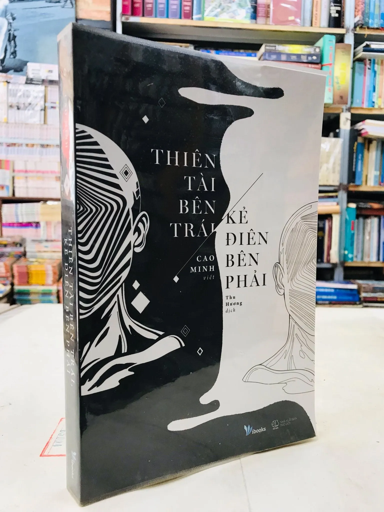
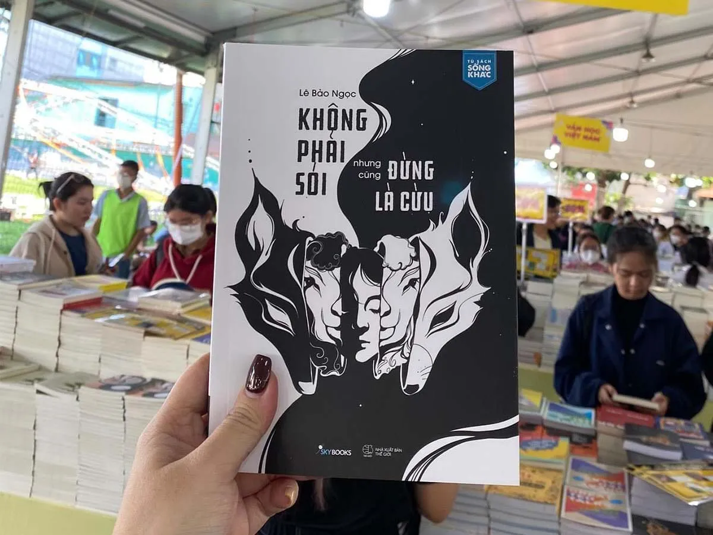
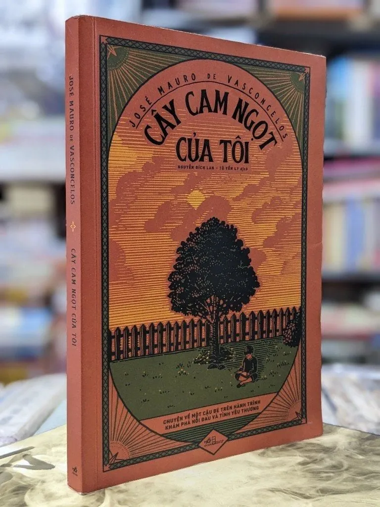

Thiên tài bên trái, kẻ điên bên phải

- Tác giả: Cao Minh
- Cuốn sách khám phá sự khác biệt giữa những người có tư duy sáng tạo và những người theo lối mòn, giúp bạn hiểu rõ hơn về bản thân và phát huy tiềm năng của mình.
Không phải sói nhưng cũng đừng là cừu

- Tác giả: Lê Bảo Ngọc
- Cuốn sách cung cấp những lời khuyên thực tiễn về cách xây dựng sự tự tin, quản lý cảm xúc và phát triển bản thân trong cuộc sống hiện đại.
Cây cam ngọt của tôi

- Tác giả: José Mauro de Vasconcelos
- Một câu chuyện cảm động về tình bạn giữa một cậu bé nghèo và một cây cam ngọt, mang đến những bài học quý giá về cuộc sống và tình yêu thương.